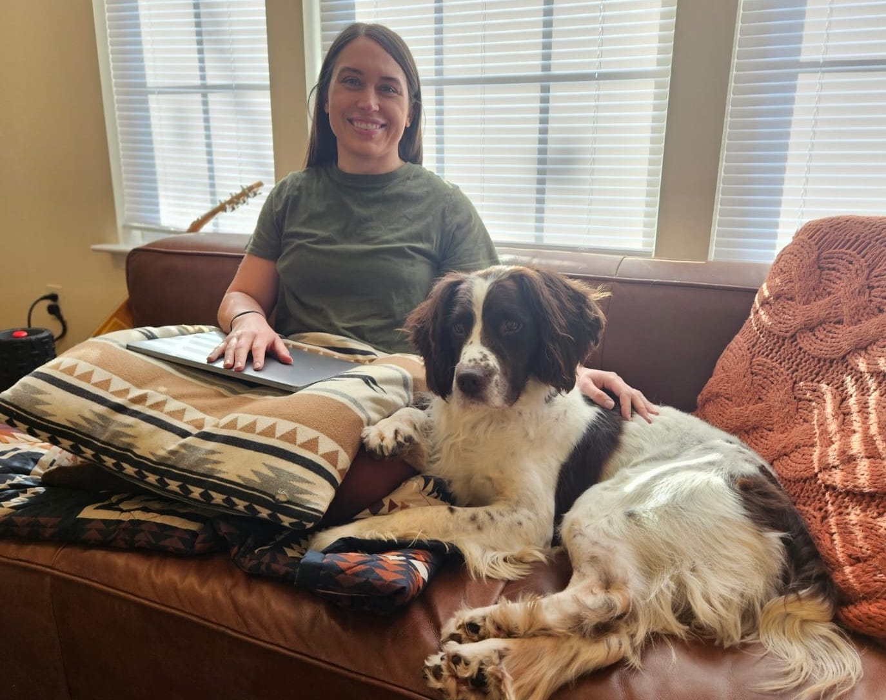
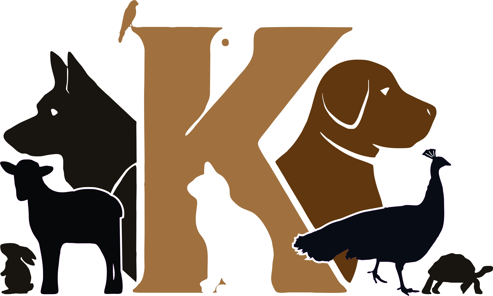
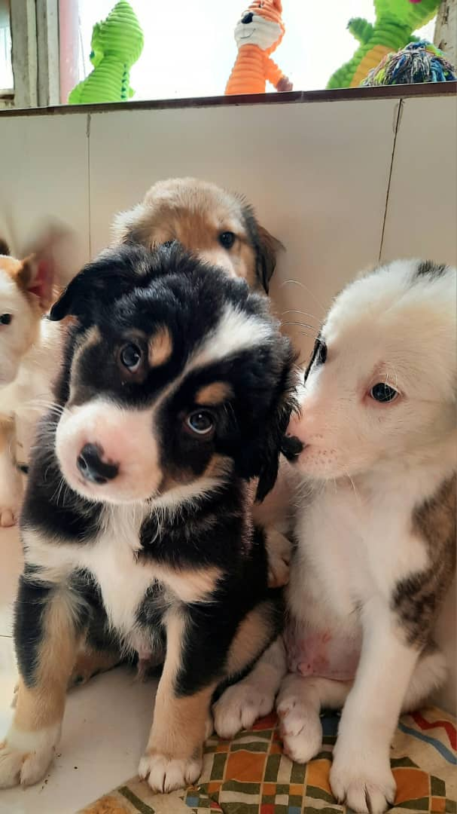

Featured story · From the KSAR archive
Chase: a journey back to family
Read KSAR’s existing story about Chase and the effort to reunite him with his former handler.
Read the story on KSAR’s website
Kabul SmallKabul Small Animal Rescue
Veterinary care, shelter and adoption services for animals in need.
A veterinary clinic.
A shelter. A place of care.

KABUL SMALL ANIMAL RESCUEWhat we do
For owned pets, street animals
and working animals.
Animals in KSAR shelters*
Clinic staffed by licensed veterinarians
Routine care · Saturday–Thursday
*Figure published on KSAR’s donation page, checked 11 September 2026.
In pictures
Photographs from our website.
A closer look at the animals.

Featured story · From the KSAR archive
Read KSAR’s existing story about Chase and the effort to reunite him with his former handler.
Read the story on KSAR’s websiteSupport Kabul Small Animal Rescue
Your donation supports food, vaccines,
medical treatment and
ongoing care.
One-time and recurring giving options available.
Emergency & clinic
Emergency cases can be brought or called in 24/7.
Routine
appointments: Saturday–Thursday, 8am–5pm.